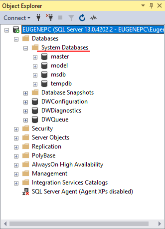
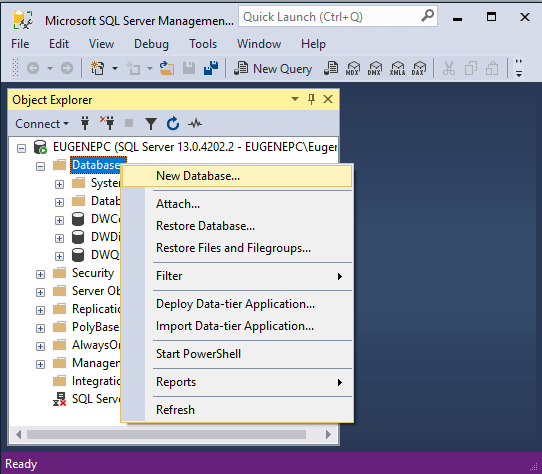
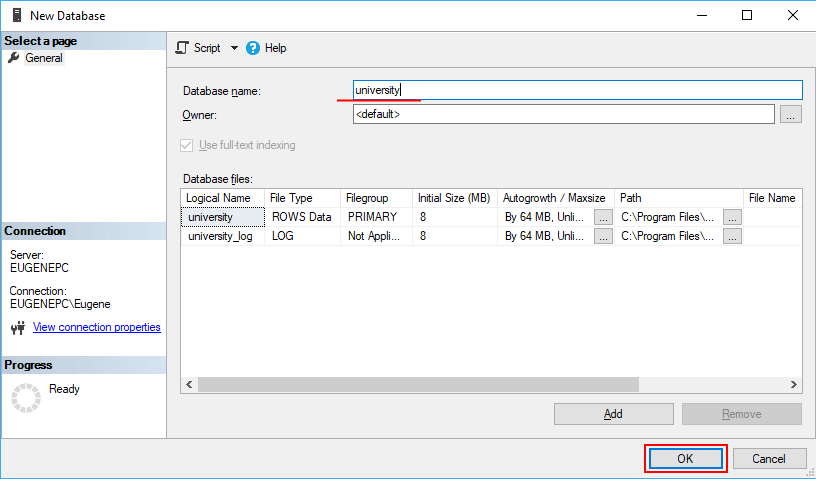
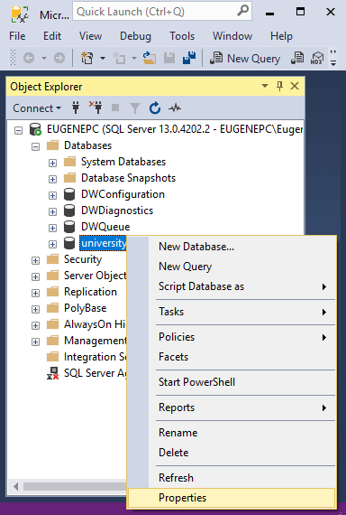

Начало работы с MS SQL Server
Создание базы данных
Базу данных часто отождествляют с набором таблиц, которые хранят данные. Но это не совсем так. Лучше сказать, что база данных представляет хранилище объектов. Основные из них:
Таблицы: хранят собственно данные
Представления (Views): выражения языка SQL, которые возвращают набор данных в виде таблицы
Хранимые процедуры: выполняют код на языке SQL по отношению к данным к БД (например, получает данные или изменяет их)
Функции: также код SQL, который выполняет определенную задачу
В SQL Server используется два типа баз данных: системные и пользовательские. Системные базы данных необходимы серверу SQL для корректной работы. А пользовательские базы данных создаются пользователями сервера и могут хранить любую произвольную информацию. Их можно изменять и удалять, создавать заново. Собственно это те базы данных, которые мы будем создавать и с которыми мы будем работать.
Системные базы данных
В MS SQL Server по умолчанию создается четыре системных баз данных:
master: эта главная база данных сервера, в случае ее отсутствия или повреждения сервер не сможет работать. Она хранит все используемые логины пользователей сервера, их роли, различные конфигурационные настройки, имена и информацию о базах данных, которые хранятся на сервере, а также ряд другой информации.
model: эта база данных представляет шаблон, на основе которого создаются другие базы данных. То есть когда мы создаем через SSMS свою бд, она создается как копия базы model.
msdb: хранит информацию о работе, выполняемой таким компонентом как планировщик SQL. Также она хранит информацию о бекапах баз данных.
tempdb: эта база данных используется как хранилище для временных объектов. Она заново пересоздается при каждом запуске сервера.
Все эти базы можно увидеть через SQL Server Management Studio в узле Databases -> System Databases:

Эти базы данных не следует изменять, за исключением бд model.
Если на этапе установки сервера был выбран и установлен компонент PolyBase, то также на сервере по умолчанию будут расположены еще три базы данных, которые используется этим компонентом: DWConfiguration, DWDiagnostics, DWQueue.
Создание базы данных в SQL Management Studio
Теперь создадим свою базу данных. Для этого мы можем использовать скрипт на языке SQL, либо все сделать с помощью графических средств в SQL Management Studio. В данном случае мы выберем второй способ. Для этого откроем SQL Server Management Studio и нажмем правой кнопкой мыши на узел Databases. Затем в появившемся контекстном меню выберем пункт New Database:

После этого нам открывается окно для создания базы данных:

В поле Database необходимо ввести название новой бд. Пусть у нас база данных называется university.
Следующее поле Owner задает владельца базы данных. По умолчанию оно имеет значение <defult>, то есть владельцем будет тот, кто создает эту базу данных. Оставим это поле без изменений.
Далее идет таблица для установки общих настроек базы данных. Она содержит две строки - первая для установки настроек для главного файла, где будут храниться данные, и вторая строка для конфигурации файла логгирования. В частности, мы можем установить следующие настройки:
Logical Name: логическое имя, которое присваивается файлу базы данных.
File Type: есть несколько типов файлов, но, как правило, основная работа ведется с файлами данных (ROWS Data) и файлом лога (LOG)
Filegroup: обозначет группу файлов. Группа файлов может хранить множество файлов и может использоваться для разбиения базы данных на части для размещения в разных местах.
Initial Size (MB): устанавливает начальный размер файлов при создании (фактический размер может отличаться от этого значения).
Autogrowth/Maxsize: при достижении базой данных начального размера SQL Server использует это значение для увеличения файла.
Path: каталог, где будут храниться базы данных.
File Name: непосредственное имя физического файла. Если оно не указано, то применяется логическое имя.
После ввода названия базы данных нажмем на кнопку ОК, и бд будет создана.
После этого она появится среди баз данных сервера. Если эта бд впоследствии не потребуется, то ее можно удалить, нажав на нее правой кнопкой мыши и выбрав в контекстном меню пункт Delete:
